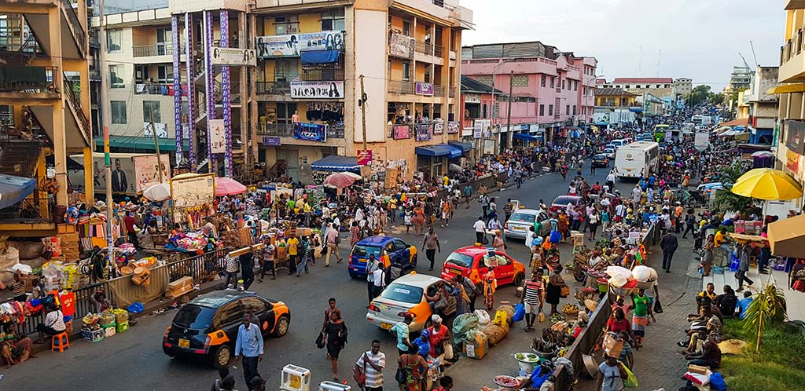

Spain

Experience the passion and diversity of Spain. Explore the architectural wonders of Barcelona, from Gaudí's whimsical creations to the Gothic Quarter's narrow streets. Indulge in tapas and paella in Madrid's bustling markets, bask in the sun on the golden beaches of the Costa del Sol, and immerse yourself in flamenco music and dance in Seville..
Reviews
Makenna NoelMadrid, Spain
"I enjoyed touring Spain, especially Madrid! I got a lot of stares, but overall, I felt pretty safe in the area. When I touched down into the airport, I was asked to take pictures by a myriad of locals, but it was nothing too out there or unexpected. I visited the Royal Palace, the Prado Museum, and multiple neighborhoods around like Lavapiés and Malasaña. Although the stares from locals were a little uncomfortable, I did not let that stop my trip and had a fun time!"
South Korea
Immerse yourself in the dynamic blend of tradition and innovation in South Korea. Explore the bustling streets of Seoul, where ancient palaces stand in the shadow of towering skyscrapers. Indulge in mouthwatering Korean barbecue, relax in traditional jjimjilbangs, and hike scenic trails in the countryside dotted with temples and cherry blossoms.
Reviews
Dameon MingSeoul, South Korea
"When I visited Korea over the holiday, I ended up having such a horrible experience. Not only did my hostel workers act discriminatory towards me, they overcharged me for way more than was in the original bill. Although my hostel did not turn out as planned, I still tried to enjoy experiencing the Korean street food culture such as tteokbokki and visiting Seoul tourist attractions, such as the Gyeongbokgung Palace. While walking from place to place, I received a lot of unwanted attention, and felt slightly unsafe with the amount of people coming up to me."
Netherlands

Discover the charm and beauty of the Netherlands. Wander along the iconic canals of Amsterdam, admiring historic gabled houses and world-class museums like the Van Gogh Museum. Cycle through picturesque countryside windmills, explore vibrant tulip fields in Keukenhof, and experience the lively atmosphere of local markets and festivals.
Reviews
Faren ThompsonAmsterdam, Netherlands
"I really enjoyed going to Amsterdam and I had booked my trip on an Amsterdam cruise to have a fun trip through the canal where I ate snacks and drinks with a smaller group. I enjoyed going bike riding in the City Center and then looking through the Noordermarkt, which is the local flea market. I had booked with a cruise company and felt safe because I was in a small group. If you plan to travel to Amsterdam, I would highly recommend booking with a tourist group. "
Japan

During my trip in Japan, I didn't receive any racist comments or underlying behaviors from the locals. I felt very welcomed by everyone here and one of my personal dangers was the African men in Tokyo. I even got grabbed by one on the way to one of my travel spots. I love the way the Japanese embrace other cultures, and things like that aren't as broadcasted on the internet. It is a very safe way for black women, and you should definitely travel to Japan!
Reviews
Faydia ThompsonAmsterdam, Netherlands
"During my trip in Japan, I didn't receive any racist comments or underlying behaviors from the locals. I felt very welcomed by everyone here and one of my personal dangers was the African men in Tokyo. I even got grabbed by one on the way to one of my travel spots. I love the way the Japanese embrace other cultures, and things like that aren't as broadcasted on the internet. It is a very safe way for black women, and you should definitely travel to Japan! "
Iceland
Explore the land of fire and ice in Iceland. Witness the awe-inspiring beauty of waterfalls like Gullfoss and Seljalandsfoss, soak in the mineral-rich waters of the Blue Lagoon, and marvel at the otherworldly landscapes of black sand beaches and volcanic craters. Chase the Northern Lights dancing across the Arctic sky and embark on thrilling glacier hikes and ice cave explorations.
Reviews
Gabriel EppersonReykjavik, Iceland
"During my solo trip to Iceland, I felt completely safe. I didn't get any weird stares or feel any sense of aggression towards me. I think something that really helped me feel safer is that I booked a tour with a private tourist group. The weather was perfect and I loved seeing the beautiful summer landscapes"
Ghana
Delve into Ghana's rich history and warm hospitality. Explore the bustling markets of Accra, visit the historic slave forts along the coast, and trek through lush rainforests in Kakum National Park. Experience traditional Ghanaian music and dance, indulge in spicy jollof rice, and relax on the palm-fringed beaches of the Gold Coast.
Reviews
Shamar SamuelsAccra, Ghana
"I went to Ghana with a group of friends this summer and thoroughly enjoyed the trip. I loved the cuisine and visited the Polo Beach Club. Next, we visited the W.E. Dubois museum and had an enriching experience learning more about Ghanaian history. My overall favorite experience was eating traditional Ghanaian jollof with pepper soup, and fufu. I felt very safe overall, but I'd highly recommend traveling within a smaller group."
Egypt

Journey through the cradle of civilization in Egypt. Marvel at the towering pyramids of Giza, cruise along the timeless Nile River, and explore the ancient temples of Luxor and Karnak. Dive into the vibrant chaos of Cairo's markets, haggle for treasures in the Khan el-Khalili bazaar, and unravel the mysteries of pharaohs and mummies in the Egyptian Museum.
Reviews
Sophy JoasilSharm El Sheik, Egypt
"I had such a bad experience in Egypt. Although I did enjoy the scenery, I was overcharged for almost every item and felt very uncomfortable by the amount of people coming up to me. Once, on the way back to my hostel, I was hustled by a "fake taxi driver", who overcharged me and wouldn't let me leave unless I paid him a certain amount. If I were to go again, I would definitely have booked my trip with a private tourist group for that extra security."